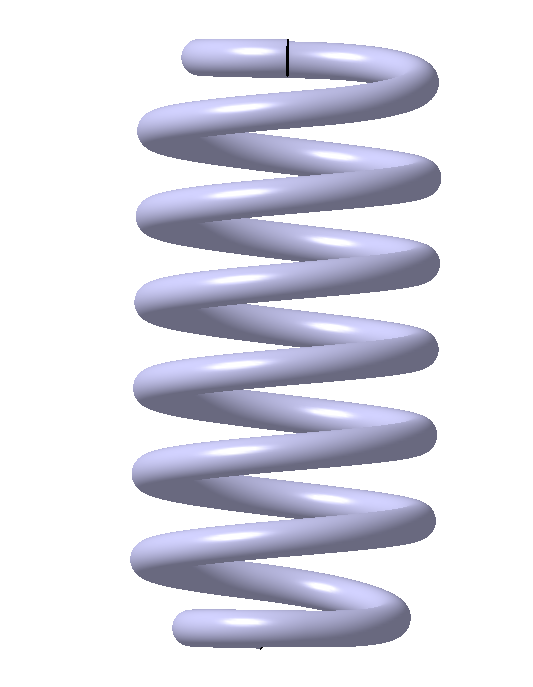
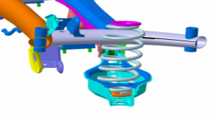
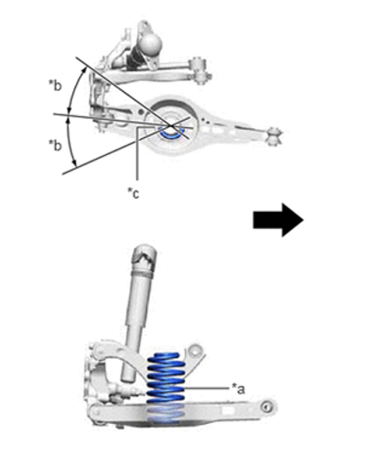

拆卸
举升车辆，拆卸车轮。
请参考： 车轮和轮胎
拆卸后稳定杆。
请参考： 后稳定杆
在适合角度，使用弹簧夹工具夹紧后螺旋弹簧，将其压缩后取下后螺旋弹簧。

安装
安装顺序与拆卸顺序相反
1. 后螺旋弹簧装配方向要求：后螺旋弹簧带有零部件标识端（弹簧大端）应该朝下（靠近下摆臂）。

2. 后螺旋弹簧在装配弹簧上、下垫时，请务必将弹簧下端端头位置位于摆臂外侧（靠近制动器一侧）端头与弹簧垫的限位凸台紧密贴合。（箭头方向指车辆内侧，*a为识别标记，*b≤30°，*c为后螺旋弹簧下端）

3、更换后螺旋弹簧时，确保同一车辆左、右两侧弹簧色标颜色相同（色标位于后螺旋弹簧下端第三圈附近位置，分为黄色和白色两种颜色）。